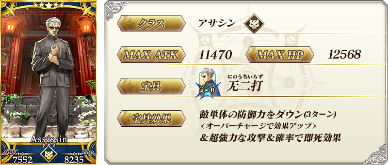
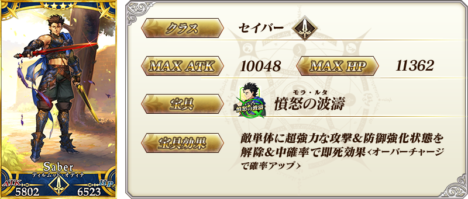
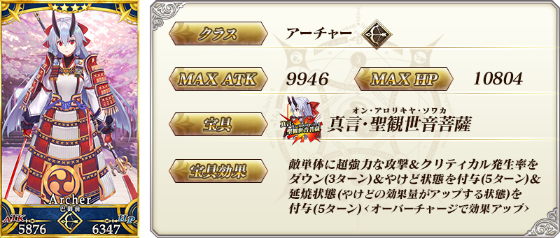
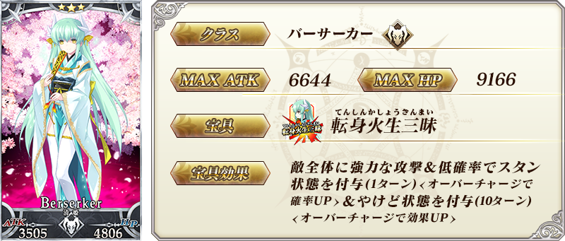

◆「雀之旅社活動日誌Pick Up2召喚(每日交替)」期間◆
期間:2019年1月8日(二) 17:00～1月22日(二) 11:59
舉辦期間限定「雀之旅社活動日誌Pick Up2召喚(每日交替)」！
※未通過第2部 第3章「Lostbelt No.3 人智統合真國 SIN 紅之月下美人」的狀態也能進行「雀之旅社活動日誌Pick Up2召喚(每日交替)」。
新Servant「★5(SSR)李書文(Assassin)」在聖晶石召喚登場！
本次包含上述Pick Up 4位的Servant！
「★4(SR)迪爾姆德・奧德利暗(Saber)」「★4(SR)Archer・地獄(巴御前)」以每日交替Pick Up！
「★5(SSR)李書文(Assassin)」「★3(R)清姬(Berserker)」常駐Pick Up。
詳情請在聖晶石召喚畫面左下的召喚詳細確認。
做為期間限定概念禮裝的「★5(SSR)笑顔のしるし」「★4(SR)正月の神秘」「★3(R)慎ましき豚」也出現！
裝備上述3種概念禮裝的話，在期間限定活動「雀之旅社活動日誌～閻魔亭繁盛記～」中會提升活動收集道具的掉落獲得數。
◆有關Servant的注意◆
※李書文(Assassin)為自2019年1月8日(二) 17:00，在通過Lostbelt No.3後追加到故事召喚的Servant。
※Pick Up期間中，李書文(Assassin)就算通過章節前也能入手。
※李書文(Assassin)、迪爾姆德・奧德利暗(Saber)、Archer・地獄(巴御前)、清姬(Berserker)在Pick Up期間結束後仍會在故事召喚被抽出。
※關於真名尚未判明的Servant，透過主線關卡的進行度會讓Servant及一部份寶具的名稱變化。
◆有關概念禮裝的注意◆
※請注意做為抽出對象的期間限定概念禮裝只有「★5(SSR)笑顔のしるし」「★4(SR)正月の神秘」「★3(R)慎ましき豚」，其他期間限定概念禮裝為抽出對象外。
※ましき豚在Pick Up期間中，也能在友情點數召喚獲得。
※請注意自友情點數召喚抽出的慎ましき豚在自動變還設定登錄★3(R)概念禮裝的情況，會變成自動變還的對象。
Pick Up期間中，新登場Servant、Pick Up Servant、期間限定概念禮裝的出現機率提升！
10次召喚中確定1張★4(SR)以上和確定1位★3(R)以上的Servant！
※確定★4(SR)以上包含Servant和概念禮裝。
| 每日交替Pick Up期間 | 每日交替Pick Up內容 |
|---|---|
| 1月8日(二) 17:00～22:59 | 李書文(Assassin) 迪爾姆德・奧德利暗(Saber) Archer・地獄(巴御前) |
| 1月8日(二) 23:00～1月9日(三) 22:59 | 李書文(Assassin) 迪爾姆德・奧德利暗(Saber) |
| 1月9日(三) 23:00～1月10日(四) 22:59 | 李書文(Assassin) Archer・地獄(巴御前) |
| 1月10日(四) 23:00～ 1月14日(一) 22:59 |
李書文(Assassin) 迪爾姆德・奧德利暗(Saber) Archer・地獄(巴御前) |
| 1月14日(一) 23:00～ 1月16日(三) 22:59 |
李書文(Assassin) 迪爾姆德・奧德利暗(Saber) |
| 1月16日(三) 23:00～ 1月18日(五) 22:59 |
李書文(Assassin) Archer・地獄(巴御前) |
| 1月18日(五) 23:00～ 1月22日(二) 11:59 |
李書文(Assassin) 迪爾姆德・奧德利暗(Saber) Archer・地獄(巴御前) |
※請注意會以每日交替變更Pick Up的Servant。


※上述「★5(SSR)李書文(Assassin)」的卡面為靈基再臨第2階段。

※上述「★4(SR)迪爾姆德・奧德利暗(Saber)」的卡面為靈基再臨第2階段。

※上述「★4(SR)Archer・地獄(巴御前)」的卡面為靈基再臨第2階段。

※上述「★3(R)清姬(Berserker)」的卡面為靈基再臨第2階段。

|
★★★★★SSR |
|
★★★★SR |

|
★★★R
|

※上述「★5(SSR)李書文(Assassin)」的立繪為靈基再臨第2階段。
介紹李書文(Assassin)的寶具演出！
在「Fate/Grand Order」官方網站內的公告中，公開了「★5(SSR)李書文(Assassin)」的寶具演出。敬請確認。
介紹迪爾姆德・奧德利暗(Saber)、Archer・地獄(巴御前)的寶具演出！
在「Fate/Grand Order」官方網站內的公告中，公開了「★4(SR)迪爾姆德・奧德利暗(Saber)」「★4(SR)Archer・地獄(巴御前)」的寶具演出。敬請確認。
關於期間限定「雀之旅社活動日誌Pick Up召喚(每日交替)」請自下述橫幅確認。